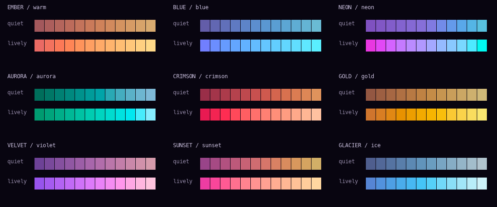

Audio-only character · wider color expression
Same tempo, different low-end timbres. Left: pitched/rounded bass stays warm.
Right: broad, punchy, regular bass favors Neon at 120 BPM. As mids and highs build,
each family becomes brighter and more colorful. These are controlled, generated
spectra rendered by the actual TUI, not recordings or proof of artist recognition.
Animated GIF · Full-size still
Nine quiet-to-lively families

Default: party. More expressive: party --color-response 1.8.
Lock a family with --palette warm, neon, aurora,
crimson, gold, violet, sunset,
ice, or blue. Press p to cycle them.
Automatic decisions estimate bass character, not actual artist or genre identity.
Unknown evidence holds the prior family; vocals above the bass band affect expression only.